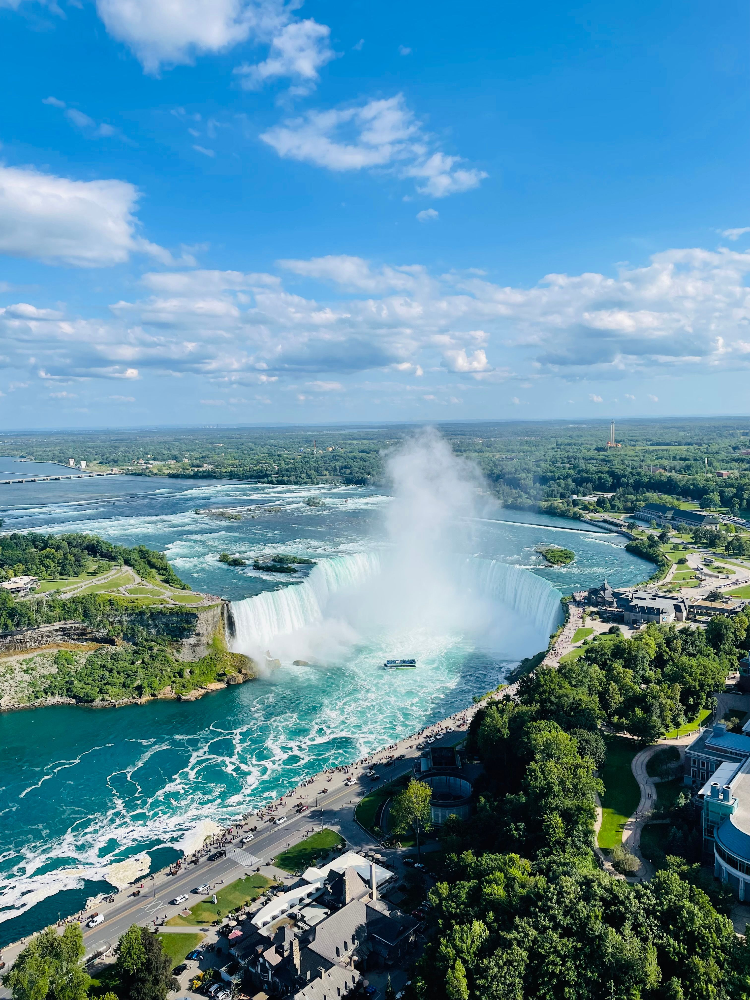
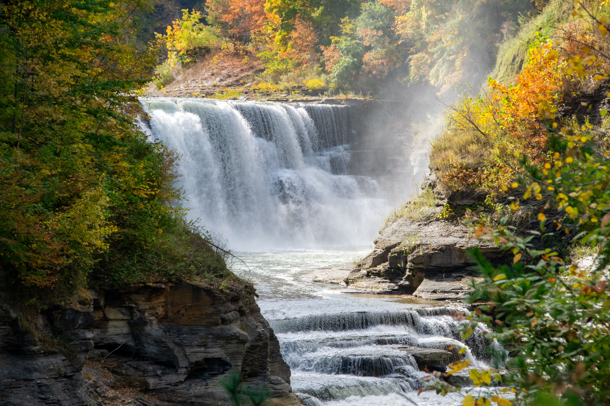
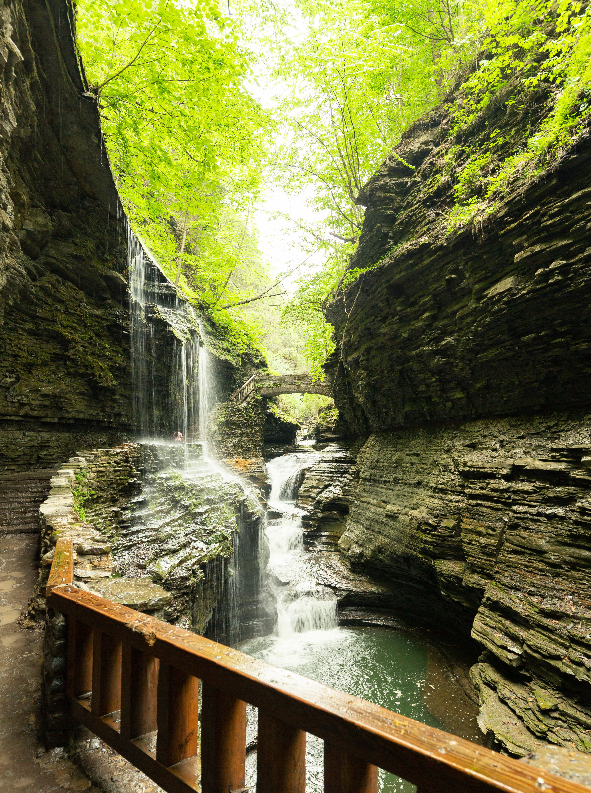
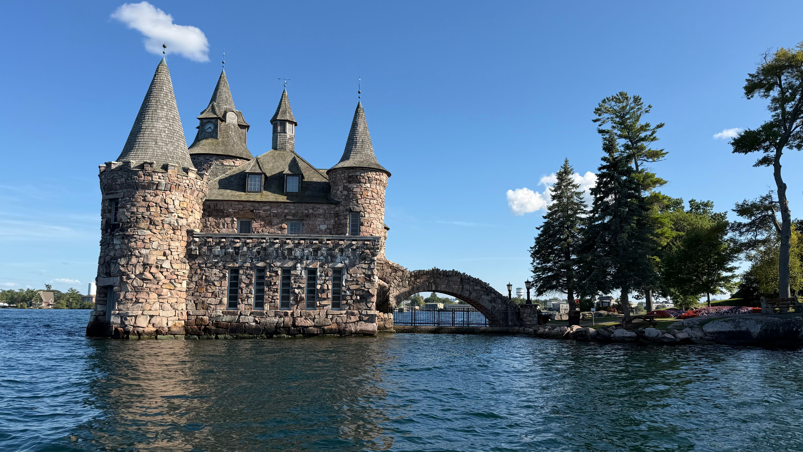

=======
=======
Discover Upstate New York
<<<<<<< HEAD Upstate New York is a home to breathtaking landscapes, charming towns, intersting attractions, and unique places to explore. Whether you enjoy nature, history, or dicovering new places, Upstate New York has something for everyone.=======Upstate New York is home to breathtaking landscapes, charming towns, interesting attractions, and unique places to explore. Whether you enjoy nature, history, or discovering new places, Upstate New York has something for everyone.>>>>>>> 9a7b8c22f9e02aa1a79bd1682a5a4ee98e151978
Explore our selected destinations and discover what makes Upstate New York worth visiting.
Explore DestinationsWhat You'll Find on Our Website
Our website highlights five destinations across Upstate New York. Each destination includes information about what makes it special and why it is worth visiting. Whether you are looking for natural attractions, cultural experiences, or interesting places to explore, we hope our selections help you find your next destination.
Something for Everyone
One of the best things about Upstate New York is the variety of experiences it offers. From scenic mountains and beautiful lakes to historic landmarks and cultural attractions, the region has something for everyone. Its changing seasons also make it a wonderful place to explore throughout the year.
Featured Destinations
Here are a few of the places you can discover throughout Upstate New York. Each destination offers something unique and worth exploring.

Niagara Falls

Letchworth State Park

Watkins Glen

Boldt Castle
Planning a visit? Explore our Destinations page to learn more about each location, discover what makes it special, and find useful information to help you plan your visit.
Explore All Destinations